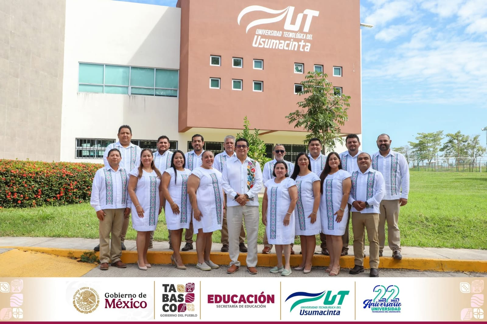
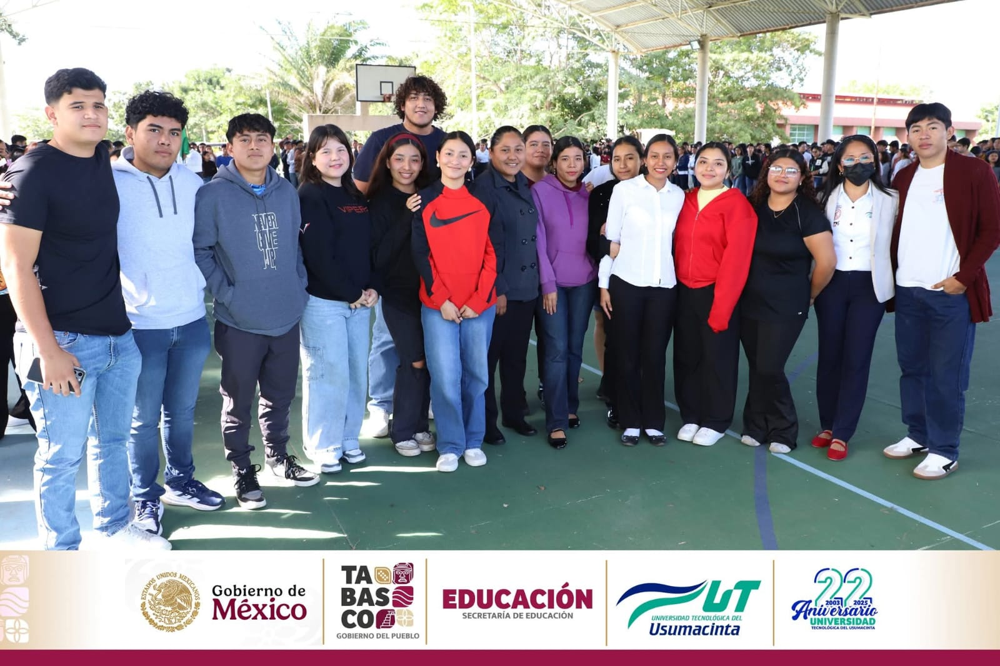
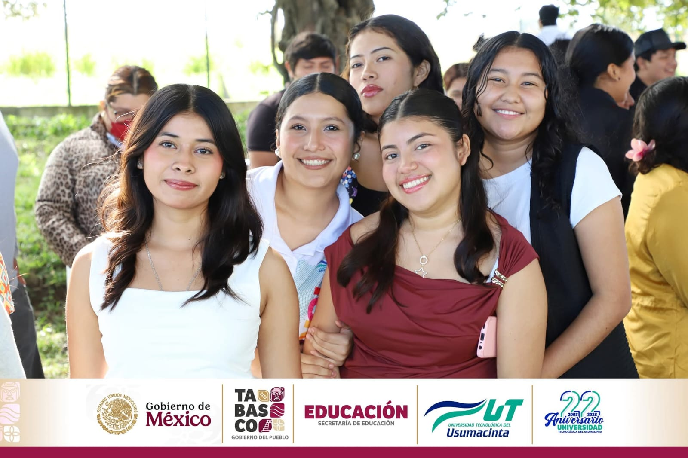
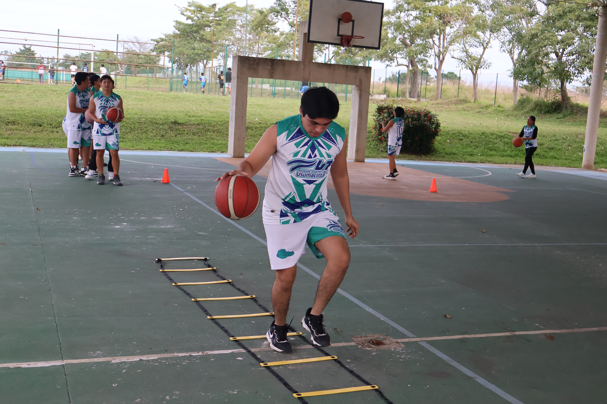
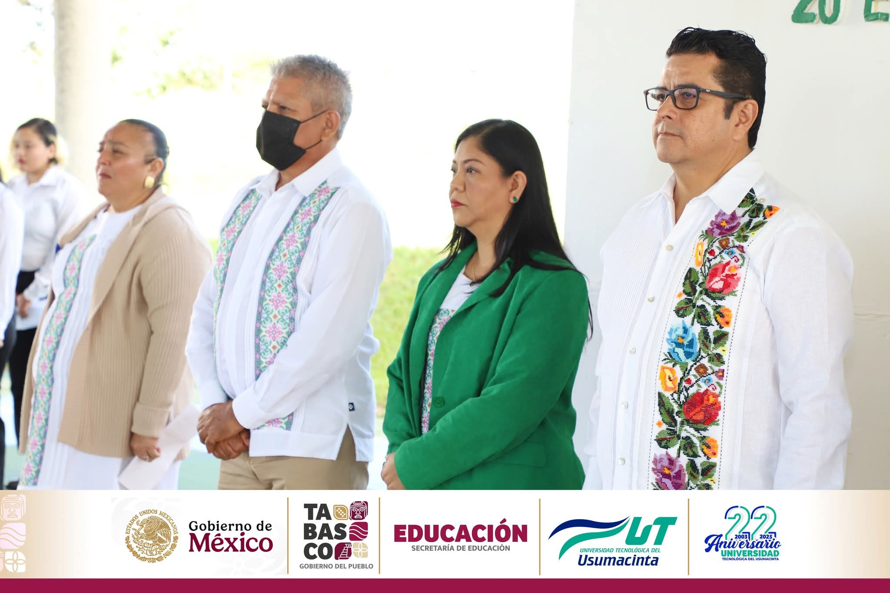

Componente práctico
Se desarrolla a través de las propias materias, laboratorios, talleres, proyectos integradores, actividades académicas y experiencias profesionales.
Universidad Tecnológica del Usumacinta
En la UTU la formación profesional combina el conocimiento académico con la práctica, los proyectos, los espacios especializados y las experiencias que te preparan para tu futuro profesional.

TSU Primera estadía Ingeniería o Licenciatura Segunda estadía
La universidad
La Universidad Tecnológica del Usumacinta es una institución de educación superior ubicada en el municipio de Emiliano Zapata, Tabasco, cuya propuesta educativa se caracteriza por una formación orientada principalmente a la práctica y a la aplicación de conocimientos.
Su modelo formativo combina conocimientos teóricos con una importante participación práctica: prácticas, proyectos, laboratorios, experiencias profesionales y participación en la vida universitaria. La comunidad universitaria participa además en actividades culturales, deportivas, académicas, tecnológicas y de vinculación.
Conoce más sobre la UTU
Competencias desarrolladas mediante prácticas, proyectos, laboratorios y experiencias profesionales.
Relación con empresas, organizaciones e instituciones que acerca a los estudiantes a su área profesional.
Actividades culturales, deportivas y paraescolares que complementan la preparación profesional.
Modelo académico
Un esquema que favorece que los conocimientos adquiridos se utilicen y comprueben mediante ejercicios, prácticas, proyectos y actividades relacionadas con el área profesional.
Se desarrolla a través de las propias materias, laboratorios, talleres, proyectos integradores, actividades académicas y experiencias profesionales.
Comprende investigaciones, actividades de aprendizaje, trabajos académicos y los fundamentos necesarios para comprender y resolver situaciones relacionadas con la profesión.
Ruta académica
El TSU y la Ingeniería o Licenciatura forman parte de una misma ruta de formación, con dos estadías profesionales y la posibilidad de obtener dos títulos y dos cédulas profesionales.
Primera etapa de la ruta formativa universitaria.
Aplicación de conocimientos y competencias mediante actividades o un proyecto del área profesional.
Continuidad de estudios de nivel superior.
Cierre de la formación profesional, vinculado con las necesidades del sector correspondiente.
Conclusión de la ruta completa de formación.
Oferta educativa
Cada programa de Técnico Superior Universitario cuenta con su continuidad de estudios correspondiente.
Tecnologías de la Información e Innovación Digital
Continuidad Ingeniería en Tecnologías de la Información e Innovación Digital
“Creando experiencias digitales innovadoras”
Ver programaBiotecnología
Continuidad Ingeniería en Biotecnología
“Innovación biotecnológica que impulsa el desarrollo”
Ver programaNegocios y Mercadotecnia
Continuidad Licenciatura en Negocios y Mercadotecnia
“Pasión creativa por los negocios”
Ver programaGastronomía
Continuidad Licenciatura en Gastronomía
“El arte de cocinar, el placer de degustar”
Ver programaTurismo
Continuidad Licenciatura en Gestión y Desarrollo Turístico
“Pasión por el Turismo Sustentable y Accesible”
Ver programaProtección Civil y Atención Prehospitalaria
Continuidad Licenciatura en Protección Civil
“Respondiendo al llamado, protegiendo a la comunidad”
Ver programaContaduría
Continuidad Licenciatura en Contaduría
“Soluciones contables para la toma de decisiones”
Ver programa¿Por qué estudiar en la UTU?
Obtención de dos títulos y dos cédulas profesionales mediante la ruta de formación correspondiente.
Estadías profesionales al concluir el TSU y la Ingeniería o Licenciatura.
Certificación en competencias académicas y laborales.
Espacios con equipo audiovisual para apoyar el aprendizaje.
Oportunidades de movilidad y experiencias académicas internacionales.
Acompañamiento académico durante la formación universitaria.
Actividades culturales, deportivas y paraescolares.
Talleres y capacitación especializada de acuerdo con el perfil académico.
Relaciones con empresas y organizaciones que favorecen estadías, colaboraciones y proyectos.
Campus
La universidad cuenta con espacios destinados a la formación académica, las prácticas, la convivencia y el desarrollo integral de la comunidad universitaria.

Espacio especializado para apoyar las actividades prácticas del área.

Cuatro laboratorios, dos de mayor capacidad y dos para equipos de menor requerimiento. La infraestructura incluye equipos Mac.
Aulas climatizadas y equipo audiovisual para apoyar la enseñanza y el aprendizaje.

Auditorio de Turismo, Auditorio del Edificio 1 y Auditorio del Edificio 2, para actividades académicas, culturales e institucionales.

Cancha de fútbol sintética, cancha techada para fútbol y básquetbol, alberca semiolímpica y áreas verdes.

Biblioteca, consultorio de enfermería, consultorio psicopedagógico, servicio médico mediante IMSS, papelería, cafetería e internet gratuito.
Vida universitaria
La experiencia universitaria no se limita a las actividades académicas. La UTU desarrolla actividades culturales, deportivas, sociales y extracurriculares que complementan la formación profesional.
Durante el primer año, los estudiantes pueden participar en actividades paraescolares que permiten desarrollar disciplina, trabajo en equipo, creatividad, condición física y convivencia. Al finalizar los periodos correspondientes se realizan demostraciones y actividades de cierre.
Conoce los paraescolares
Noticias y eventos
Contenido de ejemplo. Pendiente de sustituirse por publicaciones oficiales desde Firestore.
#OrgullosamenteUTU · #ÚneteYa
Significa practicar, desarrollar, participar y transformar. Conoce la oferta académica de la Universidad Tecnológica del Usumacinta y forma parte de una ruta de formación con experiencia profesional.